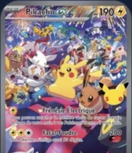

1. Accueil : nouvelle rubrique
Boutiques près de toi
Vraies boutiques, d'après OpenStreetMap
Pré-gradation
Estime la note de ta carte avant de l'envoyer en gradation

Ta carte vaut-elle une gradation ?
Centrage, coins, bords et surface analysés en 2 photos.
1Recto2Verso3Ta note
1 pré-gradation offerte par jour · illimité avec Premium (à confirmer)
Ma dernière pré-gradation

Pikachu-ex
Étincelles Déferlantes · il y a 2 jours
2. Prise de vue guidée
Pré-gradation
1Recto2Verso3Analyse
Place le RECTO dans le cadre
✓Carte entière dans le cadre
✓Image nette
!Reflet en haut à droite : incline un peu
✓Fond sombre et uni
Verso
à venir
à venir
Photo auto dès que tout est vert
Importer
une photo
une photo
Sans étui ni sleeve
À plat, fond sombre
Lumière douce, sans reflet
Téléphone bien parallèle
3. Analyse (quelques secondes)
Analyse en cours
✓Recto✓Verso3Analyse
✓Centrage53/47 · 61/39
✓Coins8 coins vus
Bordsen cours…
4Surfaceen attente
L'analyse se fait sur ton téléphone : tes photos ne sont envoyées nulle part (option A).
Carte reconnue : Pikachu-ex · Étincelles Déferlantes (même moteur que le scan)
4. Résultat
Ma pré-gradation
Carte reconnue
Pikachu-ex
Étincelles Déferlantes · 238/191
8,5sur 10
Note probable
Entre 8 et 9
Fiabilité : bonneÉtat estimé : Near Mint9
CentrageRecto 53/47 · 51/49
Verso 61/39 · 56/44
8,5
Coins7 coins nets · 1 léger blanchiment (verso, bas gauche)
9
BordsPetite usure sur le bord droit du verso
8
Surface2 marques repérées au recto · à vérifier à la lumière
Où sont les défautsRectoVerso
● Marque légère (surface)
● Défaut net
Touche un repère pour le voir en grand.
Les 4 coins du recto, agrandis
9,5
9,5
9
9,5
Notes probables par entreprise
Chances estimées pour chaque note
10
9
8
7
9le plus probable
10
9
8,5
8
9le plus probable
9,5
9
8,5
8
9le plus probable
Ça vaut le coup de la grader ?
PSAPCACCC
Valeur brute (Near Mint)120 €
Valeur si PSA 9 (estimation)210 €
Coût de gradation + envoi− 35 €
Gain probable+ 55 €
Oui, ça peut valoir le coup
Même à 8, tu rentres dans tes frais (+ 12 €).
J'ai reçu la vraie note
Indique-la : elle rend les estimations plus justes
Estimation à partir de photos, pas une gradation officielle. Dropicards n'est lié à aucune entreprise de gradation ; PSA, PCA et CCC sont des marques de leurs propriétaires.